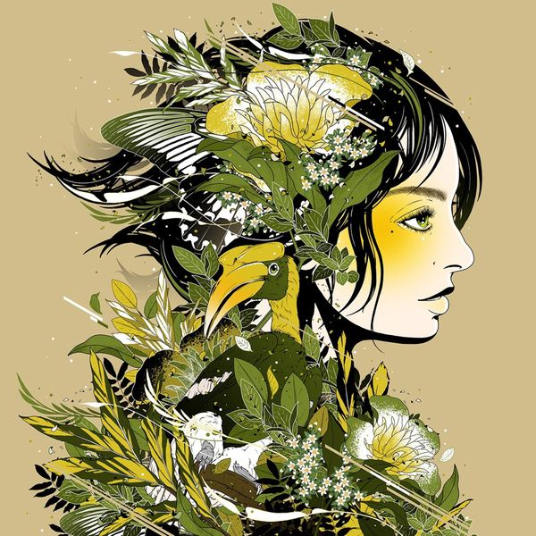

이 곡을 피아노로 치고 싶어서, 피아노를 새벽 내내 붙잡은 추억이 있는 곡이다.
필자는 2분 2초부터 시작되는 구간을 제일 좋아한다.

그 당시 누군가의 싸이월드 미니홈피에 방문했다가 배경음악을 듣게 되었다.
그 배경음악은 러브레터였고, 뇌리에 강하게 박힌 탓에 수십 년이 지난 지금도 플레이리스트에 자리 잡고 있다.

나는 첫 음에서 꽂히지 않으면 그 음악을 플레이리스트에 넣지는 않는데, 이 곡은 올해 9월에 들었던 음악 중 가장 사랑하는 음악이 되었다.